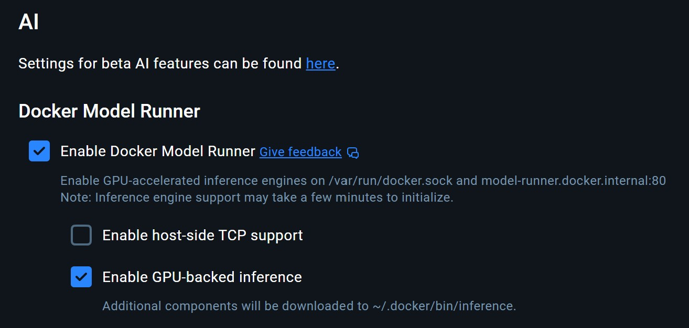

Introduction
Tabby is an open-source framework that allows the user to self-host an AI coding assistant with integrations with VS Code. In other words, it is a framwork that allows a user to have an auto-complete assistant and webchat interface with self-hosted AI assistants.
Caveats
This guide assumes you have a computer running Windows with a NVIDIA GPU of sufficient power. In addition, it is beyond the scope of this post to walk the reader through the nuances of Windows, VS Code, and extensions. It is also assumed that the user has nvidia drivers properly configured such that tabby container can be stood up with docker with GPU support.
Docker and WSL Pre-Requisites
First, make sure that you install Docker desktop and install it. Second, go to Settings > General in the Desktop application and select Use the WSL 2 based engine (Windows Home can only run the WSL 2 backend). Third,

Getting tabby started on local machine
First, open the WSL terminal. Second, post a command like in the WSL terminal:
docker run -d \
--name tabby \
--gpus all \
-p 8080:8080 \
-v $HOME/.tabby:/data \
registry.tabbyml.com/tabbyml/tabby \
serve \
--model StarCoder-1B \
--chat-model Qwen2-1.5B-Instruct \
--device cudaThird, you can check if this is working with docker logs -f --tail 200 tabby and docker exec tabby curl -v http://localhost:8080/. Fourth, if that works navigate to http://locahost:8080 and create a user account. Five, once you create an account navigate to the profile icon and it will display endpoint url and token. These can be used in the next step.
Installing VS Code extensions and
First, in VS Code make sure you go to extensions and install the tabby extension as follows here. Second, in VS Code click the tabby icon on the lower right side. Click the option that says Connect to Server and input the Tabby server’s endpoint URL and account token. Alternatively, in VS Code palette you can type Tabby: Connect to Server and input the authentication information.
Experimenting that things work
Open VS Code and have a blank file for python. In the example below, it is named check_primes.py. Experiment with comments to get a function for prime. For example, you can write #Function to return true if number is prime or false if not in your terminal and see a function similar to the one below provided:
#!/usr/bin/env python3
import sys
#Function to return true if number is prime or false if not
def isPrime(n):
if n == 1:
return False
if n == 2:
return True
if n % 2 == 0:
return False
for i in range(3, int(n ** 0.5) + 1, 2):
if n % i == 0:
return False
return True
def main():
if len(sys.argv) != 3:
print(f"Usage: {sys.argv[0]} <number1> <number2>")
sys.exit(1)
for arg in sys.argv[1:]:
try:
num = int(arg)
except ValueError:
print(f"Error: '{arg}' is not an integer.")
continue
if isPrime(num):
print(f"{num} is prime")
else:
print(f"{num} is not prime")
if __name__ == "__main__":
main()
The rest of the code shown above can be reproduced in a similar fashion through a combination of code completion, direct input, and prompts. In this demonstration, the rest can be generated with any sufficiently powerful AI assistant via chat. It is recommended to leverage a self hosted model of at least 7B for that functionality. Given the above, once can test this out if the file is named check_primes.py and ran as follows:
python3 check_primes.py 9 11
9 is not prime
11 is primeLet us briefly recap the above. In a matter of mere seconds, a prototype program was developed to determine if a number is prime or not. It has purposely been left very raw and without any revisions. In practice, the user is sure to refine, tweak, and optimize. It is for demonstration and convenience purposes only to show capabilities.
Summary
The reader should now be able to install and use tabby on their local machine. The key part of this demonstration is just how quickly one can install AI assistance tools with open-source frameworks and be able to self-host with reasonable hardware.
A brief philosophical muse as follows: The combination of code-completion, direct user input, and use of prompts via comments is very powerful tool in a capable user and practioner. While these ai empowered tools enhance productivity, one must still be mindful of the fundamentals. It is highly encouraged for readers to stay focused on the principles of good architecture and software, irregardless of how tools create it. An experienced technical worker should make sure that a program is solving a problem and a business need in an effective and optimal manner. In a word, it is usMore generally, an engineer still must contend with optimal data structures, design patterns, reliability, and scalability. In brief, making something useful and reliable.
This open source framework will allow reaching that objective quicker and faster if used carefully. In addition, these tools empower an engineer or user to do much more very quickly.